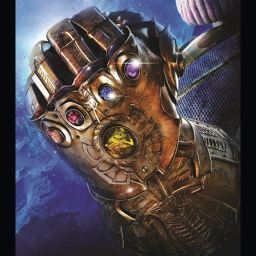
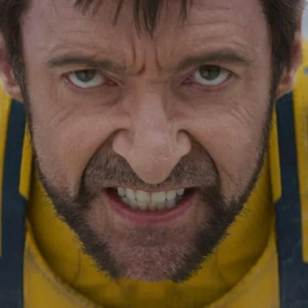
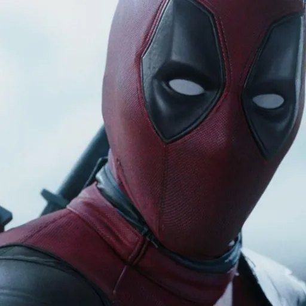
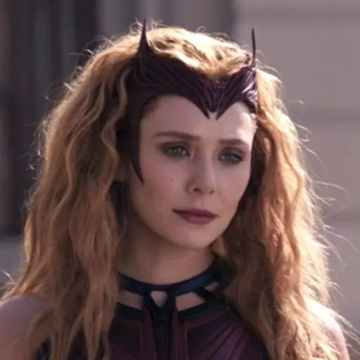

Кто из героев Marvel смог бы пережить Щелчок бесконечности?
Кто успел бы щёлкнуть, кто выжил бы с обожжённой рукой, а кого Перчатка убила бы? Представим десять персонажей Marvel на месте Халка в «Финале».

Что происходит в момент Щелчка
Возьмём один Щелчок в масштабе «Финала»: герой надевает рабочую Перчатку с шестью Камнями и пытается вернуть всех исчезнувших. В фильме Халка скручивает уже при надевании Перчатки. Он успевает щёлкнуть и выживает, но получает тяжёлый ожог руки. Бэннер объясняет, что в излучении Камней преобладает гамма, которую его тело переносит лучше большинства. Первый Щелчок оставляет ожоги даже на Таносе. Тони успевает щёлкнуть в наноброне, и отдача его убивает. «Мстители: Финал» ↗

Капитан Марвел
Щёлкнула бы и выжила. Вероятнее всего, получила бы сильные ожоги руки.
Кэрол получила силы при взрыве двигателя на энергии Тессеракта. В «Финале» она выдерживает удар Таноса головой, а чтобы отбросить её, ему приходится вынуть Камень Силы из Перчатки и ударить им отдельно. В «Марвелах» Кэрол пролетает сквозь звезду Халы и разжигает её. У неё достаточно выносливости, чтобы удержать руку в момент, когда Перчатка уже начала отдавать энергию. Финал «Марвелов» ↗
Тор
Щёлкнул бы и выжил, но рука, скорее всего, надолго вышла бы из строя.
В Нидавеллире Тор удерживает створки кузницы под потоком нейтронной звезды и падает без сил. Его приводит в чувство Громсекира. Тор уже показывал, что способен довести действие до конца под нагрузкой, которая его почти убивает. В «Финале» он сам предлагает надеть Перчатку, а Бэннер берёт её из-за гамма-излучения. Я бы поставил на то, что Тор успел бы щёлкнуть, а сразу после этого рухнул бы, как на кузнице. «Война бесконечности» ↗
Росомаха
Щёлкнул бы и, скорее всего, выжил. Рука могла бы остаться серьёзно повреждённой.
В финале «Людей Икс: Последняя битва» Логан подходит к Джин Грей, пока её сила срывает с него слои тканей, и раны затягиваются прямо на ходу. В «Дэдпуле и Росомахе» другой Логан выживает после перегрузки Потрошителя времени вместе с Уэйдом. В этих сценах важнее скорость заживления, чем адамантиевый скелет. Логан, вероятно, успел бы сомкнуть пальцы даже с тяжёлым ожогом. После Щелчка он восстановился бы достаточно, чтобы выжить, хотя повреждённая кисть могла бы так и не заработать нормально. «Дэдпул и Росомаха» ↗

Дэдпул
Успел бы щёлкнуть, потерял бы сознание и, скорее всего, пережил бы ожоги. Восстановление руки заняло бы время.
В первом «Дэдпуле» Уэйд отращивает отрубленную кисть. Во втором Джаггернаут разрывает его пополам, и Уэйд отращивает нижнюю часть тела. В «Дэдпуле и Росомахе» он остаётся в сознании достаточно долго, чтобы вместе с Логаном замкнуть цепь Потрошителя времени. Уэйд способен пережить масштабное разрушение тканей, поэтому вероятнее выживание после Щелчка с тяжёлой травмой, даже если часть руки придётся буквально отращивать заново. Сцена с Потрошителем времени ↗

Вижн
Щёлкнул бы и, скорее всего, сохранил сознание. Вибраниумную руку пришлось бы ремонтировать.
В первом сезоне «Что, если…?» Альтрон занимает тело, предназначавшееся Вижну, и использует все шесть Камней. Это ближайший показанный аналог для Вижна: тот же тип синтетического тела выдерживает питание от полного набора. У Альтрона Камень Разума остаётся во лбу, а остальные закреплены на броне. Готовую Перчатку из «Финала» мог бы надеть Белый Вижн: в «ВандаВижн» М.Е.Ч. уже запускает восстановленное тело без Камня во лбу. Его рука первой приняла бы разряд и могла бы отказать, а остальная часть корпуса, судя по опыту Альтрона, скорее всего, продолжила бы работать. «Что, если… Альтрон победил?», сезон 1, серия 8 ↗
Альтрон
Альтрон из «Эры Альтрона» скорее всего успел бы щёлкнуть, а его корпус сгорел бы. Сам ИИ выжил бы, если бы заранее оставил копию в другом дроне.
В фильме Альтрон меняет оболочки и окончательно проигрывает после того, как Вижн отрезает его от сети и уничтожает последнего дрона. Для обычного корпуса самая правдоподобная развязка похожа на финал Тони: одного движения хватает, а тело теряется. У Альтрона Бесконечности из «Что, если…?» исход другой. В теле Вижна он многократно пользуется полным набором Камней. Если перенести Щелчок на эту версию, она, скорее всего, переживёт и действие Перчатки. «Эра Альтрона» ↗
Икарис
Щёлкнул бы, но, вероятнее всего, погиб бы от отдачи.
Икарис выдерживает бой с несколькими Вечными и свободно летает в космосе. В конце «Вечных» он летит прямо в Солнце. Сценарист Каз Фирпо подтвердил, что этот полёт его убивает. Икарис достаточно прочен, чтобы успеть свести пальцы, но после нагрузки, охватывающей всё тело, наиболее вероятен отказ его систем. Каз Фирпо о финале «Вечных» ↗
Грут
Взрослый Грут из команды Ракеты мог бы успеть щёлкнуть, но, скорее всего, погиб бы.
У Грута отрастают ветви, и в «Войне бесконечности» он отсекает собственную руку, чтобы сделать рукоять Громсекиры. В первых «Стражах Галактики» он укрывает команду своим телом при падении корабля и погибает. Джеймс Ганн пояснял, что выросший из веточки малыш Грут — сын первого. Если разряд уничтожил бы ствол и жизненно важную часть тела, у Грута уже не осталось бы точки, из которой он сам смог бы восстановиться. Джеймс Ганн о двух Грутах ↗
Адам Уорлок
Вероятнее всего, щёлкнул бы и выжил, хотя получил бы тяжёлую травму.
В третьих «Стражах Галактики» Адам переживает сквозное ранение и позже вытаскивает Квилла из открытого космоса. Ещё сильнее аргумент из комиксов: в финале Infinity Gauntlet Адам получает полную Перчатку, пользуется её силой и остаётся жив. Экранный Уорлок моложе и не связан с Камнем Души так, как комиксный. Для него наиболее правдоподобный исход ближе к Халку в «Финале»: действие сработает, но удар придётся на руку и плечо. Marvel, Infinity Gauntlet Aftermath ↗
Алая Ведьма
Ванда, скорее всего, успела бы щёлкнуть, но при прямом контакте с Перчаткой погибла бы.
В «Войне бесконечности» Ванда разрушает Камень Разума, одновременно удерживая Таноса. В финале «Зомби Marvel» её альтернативная версия добирается до энергии уничтоженных Камней, которую до этого сдерживал Бэннер. У Ванды есть шанс направить эту энергию магией, как в анимационной версии. В нашем сценарии поток идёт через надетую Перчатку и её тело. Это делает самый вероятный исход похожим на Щелчок Тони: желание исполнится, а отдача окажется смертельной. Финал «Зомби Marvel» ↗
